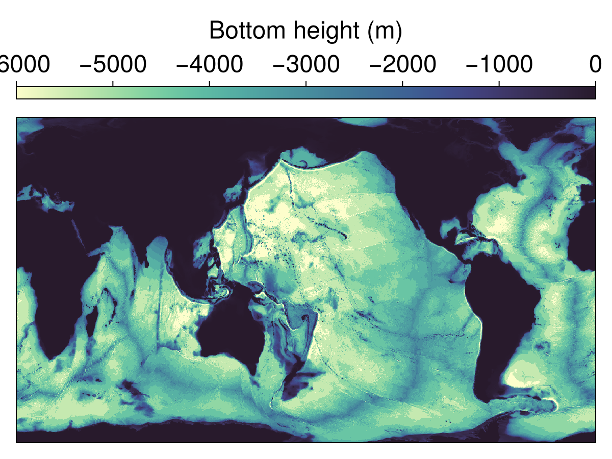
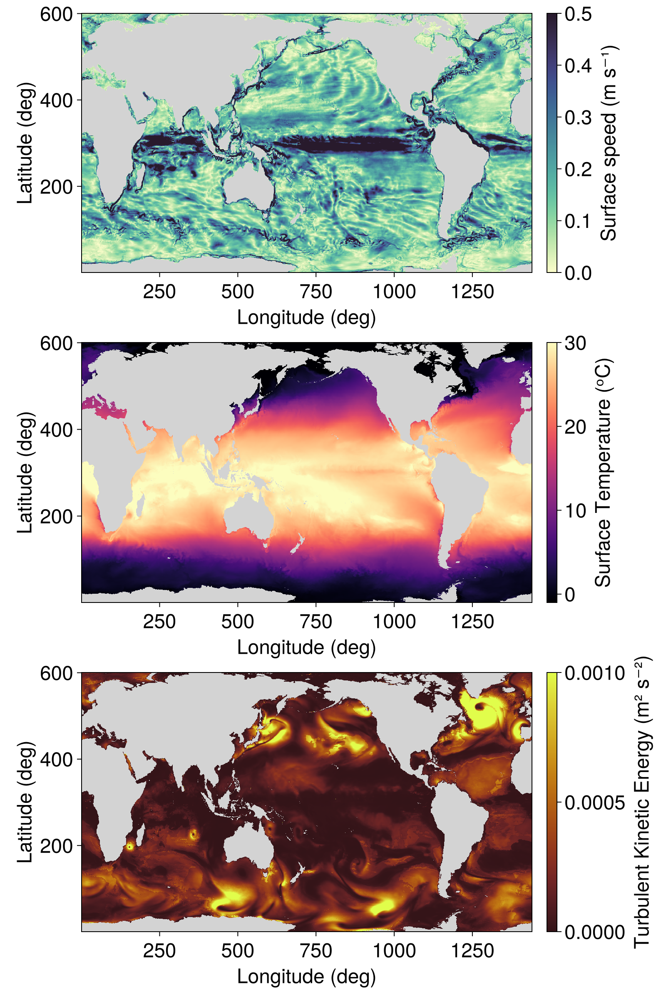

Near-global ocean simulation
This example sets up and runs a near-global ocean simulation using the Oceananigans.jl and ClimaOcean.jl. The simulation covers latitudes from 75°S to 75°N with a horizontal resolution of 1/4 degree and 40 vertical levels.
The simulation's results are visualized with the CairoMakie.jl package.
Initial setup with package imports
We begin by importing the necessary Julia packages for visualization (CairoMakie), ocean modeling (Oceananigans, ClimaOcean), and handling dates and times (CFTime, Dates). These packages provide the foundational tools for setting up the simulation environment, including grid setup, physical processes modeling, and data visualization.
using ClimaOcean
using Oceananigans
using Oceananigans.Units
using CairoMakie
using CFTime
using Dates
using PrintfGrid configuration
We define a global grid with a horizontal resolution of 1/4 degree and 40 vertical levels. The grid is a LatitudeLongitudeGrid spanning latitudes from 75°S to 75°N. We use an exponential vertical spacing to better resolve the upper ocean layers. The total depth of the domain is set to 6000 meters. Finally, we specify the architecture for the simulation, which in this case is a GPU.
arch = GPU()
Nx = 1440
Ny = 600
Nz = 40
depth = 6000meters
z_faces = exponential_z_faces(; Nz, depth)
grid = LatitudeLongitudeGrid(arch;
size = (Nx, Ny, Nz),
halo = (7, 7, 7),
z = z_faces,
latitude = (-75, 75),
longitude = (0, 360))1440×600×40 LatitudeLongitudeGrid{Float64, Oceananigans.Grids.Periodic, Oceananigans.Grids.Bounded, Oceananigans.Grids.Bounded} on Oceananigans.Architectures.GPU with 7×7×7 halo and with precomputed metrics
├── longitude: Periodic λ ∈ [0.0, 360.0) regularly spaced with Δλ=0.25
├── latitude: Bounded φ ∈ [-75.0, 75.0] regularly spaced with Δφ=0.25
└── z: Bounded z ∈ [-6000.0, 0.0] variably spaced with min(Δz)=8.0258, max(Δz)=645.588Bathymetry and immersed boundary
We use regrid_bathymetry to derive the bottom height from ETOPO1 data. To smooth the interpolated data we use 5 interpolation passes. We also fill in all the minor enclosed basins except the 3 largest major_basins, as well as regions that are shallower than minimum_depth.
bottom_height = regrid_bathymetry(grid;
minimum_depth = 10meters,
interpolation_passes = 5,
major_basins = 3)
grid = ImmersedBoundaryGrid(grid, GridFittedBottom(bottom_height); active_cells_map=true)1440×600×40 ImmersedBoundaryGrid{Float64, Oceananigans.Grids.Periodic, Oceananigans.Grids.Bounded, Oceananigans.Grids.Bounded} on Oceananigans.Architectures.GPU with 7×7×7 halo:
├── immersed_boundary: GridFittedBottom(mean(z)=-2513.5, min(z)=-6000.0, max(z)=0.0)
├── underlying_grid: 1440×600×40 LatitudeLongitudeGrid{Float64, Oceananigans.Grids.Periodic, Oceananigans.Grids.Bounded, Oceananigans.Grids.Bounded} on Oceananigans.Architectures.GPU with 7×7×7 halo and with precomputed metrics
├── longitude: Periodic λ ∈ [0.0, 360.0) regularly spaced with Δλ=0.25
├── latitude: Bounded φ ∈ [-75.0, 75.0] regularly spaced with Δφ=0.25
└── z: Bounded z ∈ [-6000.0, 0.0] variably spaced with min(Δz)=8.0258, max(Δz)=645.588Let's see what the bathymetry looks like:
h = grid.immersed_boundary.bottom_height
fig, ax, hm = heatmap(h, colormap=:deep, colorrange=(-depth, 0))
cb = Colorbar(fig[0, 1], hm, label="Bottom height (m)", vertical=false)
hidedecorations!(ax)
save("bathymetry.png", fig)
Ocean model configuration
We build our ocean model using ocean_simulation,
ocean = ocean_simulation(grid)Simulation of HydrostaticFreeSurfaceModel{GPU, ImmersedBoundaryGrid}(time = 0 seconds, iteration = 0)
├── Next time step: 5 minutes
├── Elapsed wall time: 0 seconds
├── Wall time per iteration: NaN days
├── Stop time: Inf days
├── Stop iteration: Inf
├── Wall time limit: Inf
├── Callbacks: OrderedDict with 4 entries:
│ ├── stop_time_exceeded => Callback of stop_time_exceeded on IterationInterval(1)
│ ├── stop_iteration_exceeded => Callback of stop_iteration_exceeded on IterationInterval(1)
│ ├── wall_time_limit_exceeded => Callback of wall_time_limit_exceeded on IterationInterval(1)
│ └── nan_checker => Callback of NaNChecker for u on IterationInterval(100)
├── Output writers: OrderedDict with no entries
└── Diagnostics: OrderedDict with no entrieswhich uses the default ocean.model,
ocean.modelHydrostaticFreeSurfaceModel{GPU, ImmersedBoundaryGrid}(time = 0 seconds, iteration = 0)
├── grid: 1440×600×40 ImmersedBoundaryGrid{Float64, Oceananigans.Grids.Periodic, Oceananigans.Grids.Bounded, Oceananigans.Grids.Bounded} on Oceananigans.Architectures.GPU with 7×7×7 halo
├── timestepper: QuasiAdamsBashforth2TimeStepper
├── tracers: (T, S, e)
├── closure: CATKEVerticalDiffusivity{VerticallyImplicitTimeDiscretization}
├── buoyancy: SeawaterBuoyancy with g=9.80665 and BoussinesqEquationOfState{Float64} with ĝ = NegativeZDirection()
├── free surface: Oceananigans.Models.HydrostaticFreeSurfaceModels.SplitExplicitFreeSurfaces.SplitExplicitFreeSurface with gravitational acceleration 9.80665 m s⁻²
│ └── substepping: FixedTimeStepSize(20.254 seconds)
├── advection scheme:
│ ├── momentum: Vector Invariant, Dimension-by-dimension reconstruction
│ ├── T: FluxFormAdvection(x=WENO(order=7), y=WENO(order=7), z=Centered(order=2))
│ ├── S: FluxFormAdvection(x=WENO(order=7), y=WENO(order=7), z=Centered(order=2))
│ └── e: Nothing
└── coriolis: Oceananigans.Coriolis.HydrostaticSphericalCoriolis{Oceananigans.Coriolis.ActiveCellEnstrophyConserving, Float64}We initialize the ocean model to ECCO2 temperature and salinity for January 1, 1993.
date = DateTimeProlepticGregorian(1993, 1, 1)
set!(ocean.model, T=ECCOMetadata(:temperature; dates=date),
S=ECCOMetadata(:salinity; dates=date))Prescribed atmosphere and radiation
Next we build a prescribed atmosphere state and radiation model, which will drive the development of the ocean simulation. We use the default Radiation model,
# The radiation model specifies an ocean albedo emissivity to compute the net radiative
# fluxes. The default ocean albedo is based on Payne (1982) and depends on cloud cover
# (calculated from the ratio of maximum possible incident solar radiation to actual
# incident solar radiation) and latitude. The ocean emissivity is set to 0.97.
radiation = Radiation(arch)Radiation{Float64}:
├── stefan_boltzmann_constant: 5.67e-8
├── emission: SurfaceProperties
│ ├── ocean: 0.97
│ └── sea_ice: 0.97
└── reflection: SurfaceProperties
├── ocean: LatitudeDepedendentAlbedo{Float64}: 0.069 - 0.011 ⋅ cos(2φ)
└── sea_ice: 0.7The atmospheric data is prescribed using the JRA55 dataset. The JRA55 dataset provides atmospheric data such as temperature, humidity, and wind fields to calculate turbulent fluxes using bulk formulae, see CrossRealmFluxes. The number of snapshots that are loaded into memory is determined by the backend. Here, we load 41 snapshots at a time into memory.
atmosphere = JRA55PrescribedAtmosphere(arch; backend=JRA55NetCDFBackend(41))640×320×1×2920 PrescribedAtmosphere{Float32} on Oceananigans.Grids.LatitudeLongitudeGrid:
├── times: 2920-element StepRangeLen{Float64, Base.TwicePrecision{Float64}, Base.TwicePrecision{Float64}, Int64}
├── reference_height: 10.0
└── boundary_layer_height: 600.0The coupled simulation
Next we assemble the ocean, atmosphere, and radiation into a coupled model,
coupled_model = OceanSeaIceModel(ocean; atmosphere, radiation)OceanSeaIceModel{GPU, ImmersedBoundaryGrid}(time = 0 seconds, iteration = 0)
├── ocean: HydrostaticFreeSurfaceModel{GPU, ImmersedBoundaryGrid}(time = 0 seconds, iteration = 0)
├── atmosphere: 640×320×1×2920 PrescribedAtmosphere{Float32}
└── sea_ice: FreezingLimitedOceanTemperature{ClimaSeaIce.SeaIceThermodynamics.LinearLiquidus{Float64}}
We then create a coupled simulation, starting with a time step of 90 seconds and running the simulation for 10 days.
simulation = Simulation(coupled_model; Δt=90, stop_time=10days)Simulation of OceanSeaIceModel{GPU, ImmersedBoundaryGrid}(time = 0 seconds, iteration = 0)
├── Next time step: 1.500 minutes
├── Elapsed wall time: 0 seconds
├── Wall time per iteration: NaN days
├── Stop time: 10 days
├── Stop iteration: Inf
├── Wall time limit: Inf
├── Callbacks: OrderedDict with 4 entries:
│ ├── stop_time_exceeded => Callback of stop_time_exceeded on IterationInterval(1)
│ ├── stop_iteration_exceeded => Callback of stop_iteration_exceeded on IterationInterval(1)
│ ├── wall_time_limit_exceeded => Callback of wall_time_limit_exceeded on IterationInterval(1)
│ └── nan_checker => Callback of NaNChecker for u_ocean on IterationInterval(100)
├── Output writers: OrderedDict with no entries
└── Diagnostics: OrderedDict with no entriesWe define a callback function to monitor the simulation's progress,
wall_time = Ref(time_ns())
function progress(sim)
ocean = sim.model.ocean
u, v, w = ocean.model.velocities
T = ocean.model.tracers.T
Tmax = maximum(interior(T))
Tmin = minimum(interior(T))
umax = (maximum(abs, interior(u)),
maximum(abs, interior(v)),
maximum(abs, interior(w)))
step_time = 1e-9 * (time_ns() - wall_time[])
msg = @sprintf("Iter: %d, time: %s, Δt: %s", iteration(sim), prettytime(sim), prettytime(sim.Δt))
msg *= @sprintf(", max|u|: (%.2e, %.2e, %.2e) m s⁻¹, extrema(T): (%.2f, %.2f) ᵒC, wall time: %s",
umax..., Tmax, Tmin, prettytime(step_time))
@info msg
wall_time[] = time_ns()
end
simulation.callbacks[:progress] = Callback(progress, TimeInterval(5days))Callback of progress on TimeInterval(5 days)Set up output writers
We define output writers to save the simulation data at regular intervals. In this case, we save the surface fluxes and surface fields at a relatively high frequency (every day). The indices keyword argument allows us to save down a slice at the surface, which is located at k = grid.Nz
outputs = merge(ocean.model.tracers, ocean.model.velocities)
ocean.output_writers[:surface] = JLD2OutputWriter(ocean.model, outputs;
schedule = TimeInterval(1days),
filename = "near_global_surface_fields",
indices = (:, :, grid.Nz),
with_halos = true,
overwrite_existing = true,
array_type = Array{Float32})JLD2OutputWriter scheduled on TimeInterval(1 day):
├── filepath: near_global_surface_fields.jld2
├── 6 outputs: (T, S, e, u, v, w)
├── array type: Array{Float32}
├── including: [:grid, :coriolis, :buoyancy, :closure]
├── file_splitting: NoFileSplitting
└── file size: 13.8 MiBSpinning up the simulation
We spin up the simulation with a very short time-step to resolve the "initialization shock" associated with starting from ECCO initial conditions that are both interpolated and also satisfy a different dynamical balance than our simulation.
run!(simulation)[ Info: Initializing simulation...
[ Info: Iter: 0, time: 0 seconds, Δt: 1.500 minutes, max|u|: (0.00e+00, 0.00e+00, 0.00e+00) m s⁻¹, extrema(T): (31.25, -1.87) ᵒC, wall time: 2.640 minutes
[ Info: ... simulation initialization complete (6.797 seconds)
[ Info: Executing initial time step...
┌ Warning: Simulation stopped during initialization.
└ @ Oceananigans.Simulations /central/scratch/esm/slurm-buildkite/climaocean-examples/1371/depot/default/packages/Oceananigans/Qooz1/src/Simulations/run.jl:129
[ Info: ... initial time step complete (2.629 minutes).
[ Info: Iter: 4800, time: 5 days, Δt: 1.500 minutes, max|u|: (1.75e+00, 2.27e+00, 2.17e-02) m s⁻¹, extrema(T): (32.24, -1.88) ᵒC, wall time: 46.876 minutes
[ Info: Simulation is stopping after running for 1.499 hours.
[ Info: Simulation time 10 days equals or exceeds stop time 10 days.
[ Info: Iter: 9600, time: 10 days, Δt: 1.500 minutes, max|u|: (2.02e+00, 2.05e+00, 1.19e-02) m s⁻¹, extrema(T): (33.27, -1.88) ᵒC, wall time: 43.090 minutes
Running the simulation for real
simulation.stop_time = 60days
simulation.Δt = 10minutes
run!(simulation)[ Info: Initializing simulation...
[ Info: ... simulation initialization complete (1.378 ms)
[ Info: Executing initial time step...
[ Info: ... initial time step complete (8.889 seconds).
[ Info: Iter: 10320, time: 15 days, Δt: 10 minutes, max|u|: (1.93e+00, 1.95e+00, 1.62e-02) m s⁻¹, extrema(T): (34.62, -1.88) ᵒC, wall time: 6.788 minutes
[ Info: Iter: 11040, time: 20 days, Δt: 10 minutes, max|u|: (1.74e+00, 1.83e+00, 1.83e-02) m s⁻¹, extrema(T): (35.96, -1.88) ᵒC, wall time: 6.760 minutes
[ Info: Iter: 11760, time: 25 days, Δt: 10 minutes, max|u|: (1.65e+00, 2.35e+00, 1.77e-02) m s⁻¹, extrema(T): (37.37, -1.88) ᵒC, wall time: 6.787 minutes
[ Info: Iter: 12480, time: 30 days, Δt: 10 minutes, max|u|: (2.10e+00, 2.17e+00, 2.19e-02) m s⁻¹, extrema(T): (38.07, -1.88) ᵒC, wall time: 6.778 minutes
[ Info: Iter: 13200, time: 35 days, Δt: 10 minutes, max|u|: (2.26e+00, 2.29e+00, 3.01e-02) m s⁻¹, extrema(T): (38.22, -1.88) ᵒC, wall time: 6.758 minutes
[ Info: Iter: 13920, time: 40 days, Δt: 10 minutes, max|u|: (1.93e+00, 2.25e+00, 2.66e-02) m s⁻¹, extrema(T): (38.65, -1.88) ᵒC, wall time: 6.779 minutes
[ Info: Iter: 14640, time: 45 days, Δt: 10 minutes, max|u|: (2.03e+00, 2.05e+00, 2.48e-02) m s⁻¹, extrema(T): (38.88, -1.88) ᵒC, wall time: 6.775 minutes
[ Info: Iter: 15360, time: 50 days, Δt: 10 minutes, max|u|: (2.28e+00, 2.38e+00, 2.66e-02) m s⁻¹, extrema(T): (36.87, -1.88) ᵒC, wall time: 6.750 minutes
[ Info: Iter: 16080, time: 55 days, Δt: 10 minutes, max|u|: (2.90e+00, 3.15e+00, 2.62e-02) m s⁻¹, extrema(T): (37.51, -1.88) ᵒC, wall time: 6.735 minutes
[ Info: Simulation is stopping after running for 1.126 hours.
[ Info: Simulation time 60 days equals or exceeds stop time 60 days.
[ Info: Iter: 16800, time: 60 days, Δt: 10 minutes, max|u|: (1.94e+00, 1.64e+00, 2.54e-02) m s⁻¹, extrema(T): (37.63, -1.88) ᵒC, wall time: 6.731 minutes
A pretty movie
It's time to make a pretty movie of the simulation. First we plot a snapshot:
u = FieldTimeSeries("near_global_surface_fields.jld2", "u"; backend = OnDisk())
v = FieldTimeSeries("near_global_surface_fields.jld2", "v"; backend = OnDisk())
T = FieldTimeSeries("near_global_surface_fields.jld2", "T"; backend = OnDisk())
e = FieldTimeSeries("near_global_surface_fields.jld2", "e"; backend = OnDisk())
times = u.times
Nt = length(times)
n = Observable(Nt)
land = interior(T.grid.immersed_boundary.bottom_height) .>= 0
Tn = @lift begin
Tn = interior(T[$n])
Tn[land] .= NaN
view(Tn, :, :, 1)
end
en = @lift begin
en = interior(e[$n])
en[land] .= NaN
view(en, :, :, 1)
end
un = Field{Face, Center, Nothing}(u.grid)
vn = Field{Center, Face, Nothing}(v.grid)
s = Field(sqrt(un^2 + vn^2))
sn = @lift begin
parent(un) .= parent(u[$n])
parent(vn) .= parent(v[$n])
compute!(s)
sn = interior(s)
sn[land] .= NaN
view(sn, :, :, 1)
end
fig = Figure(size = (800, 1200))
axs = Axis(fig[1, 1], xlabel="Longitude (deg)", ylabel="Latitude (deg)")
axT = Axis(fig[2, 1], xlabel="Longitude (deg)", ylabel="Latitude (deg)")
axe = Axis(fig[3, 1], xlabel="Longitude (deg)", ylabel="Latitude (deg)")
hm = heatmap!(axs, sn, colorrange = (0, 0.5), colormap = :deep, nan_color=:lightgray)
Colorbar(fig[1, 2], hm, label = "Surface speed (m s⁻¹)")
hm = heatmap!(axT, Tn, colorrange = (-1, 30), colormap = :magma, nan_color=:lightgray)
Colorbar(fig[2, 2], hm, label = "Surface Temperature (ᵒC)")
hm = heatmap!(axe, en, colorrange = (0, 1e-3), colormap = :solar, nan_color=:lightgray)
Colorbar(fig[3, 2], hm, label = "Turbulent Kinetic Energy (m² s⁻²)")
save("snapshot.png", fig)
And now a movie:
record(fig, "near_global_ocean_surface.mp4", 1:Nt, framerate = 8) do nn
n[] = nn
endThis page was generated using Literate.jl.